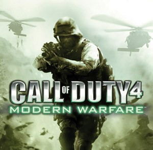
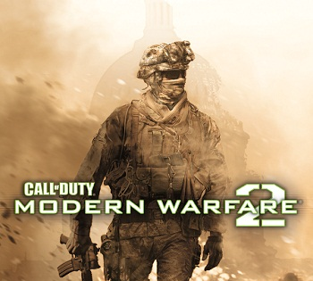
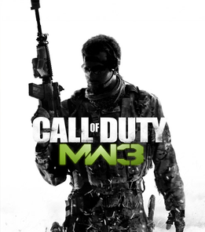

Acompanhe a saga dos jogos de guerra mais aclamada da história.
"All warfare is based on deception."

Desenvolvido pela Infinity Ward, este jogo marcou uma revolução no gênero de tiro em primeira pessoa (FPS). Foi o título que tirou a franquia Call of Duty dos campos de batalha da Segunda Guerra Mundial e a transportou para o combate contemporâneo, definindo o padrão para todos os jogos de guerra que vieram depois.

Desenvolvido pela Infinity Ward, este jogo pegou a fórmula de sucesso do seu antecessor e elevou tudo à "potência máxima". É frequentemente lembrado como o auge da era de ouro da franquia, transformando o Call of Duty em um ícone da cultura pop global."

Co-desenvolvido pela Infinity Ward e Sledgehammer Games, este título chegou com a enorme responsabilidade de encerrar a história iniciada em 2007. O jogo manteve a fórmula de sucesso, focando em entregar um desfecho bombástico e emocional para os personagens que os fãs aprenderam a amar.